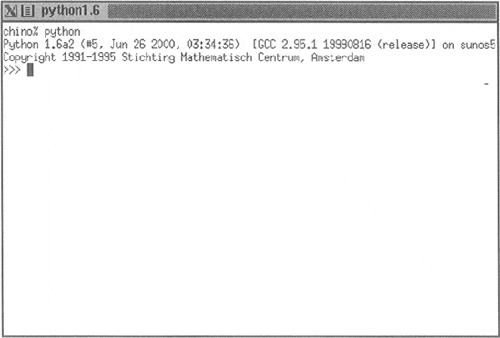
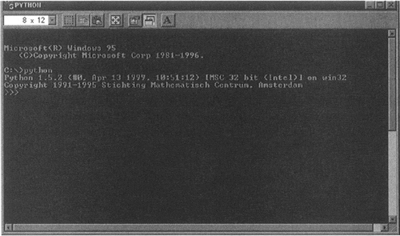
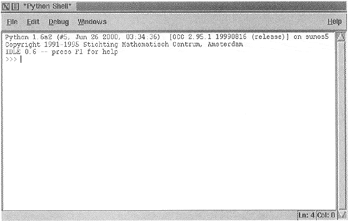
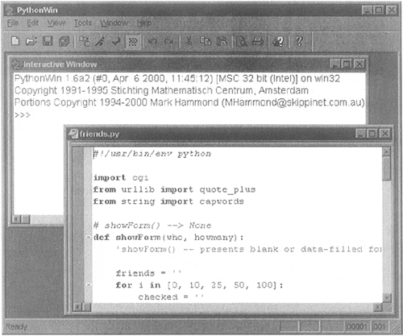
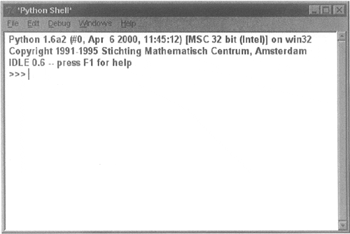
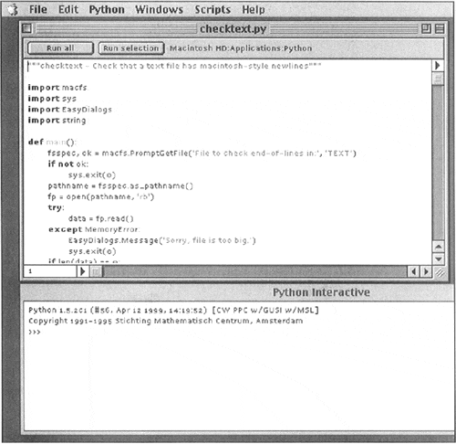

| < BACK | Make Note | Bookmark | CONTINUE > |
Running Python
There are three different ways to start Python. The simplest way is by starting the interpreter interactively, entering one line of Python at a time for execution. Another way to start Python is by running a script written in Python. This is accomplished by invoking the interpreter on your script application. Finally, you can run from a graphical user interface (GUI) from within an integrated development environment (IDE). IDEs typically feature additional tools such as debuggers and text editors.
Interactive Interpreter from the Command-line
You can enter Python and start coding right away in the interactive interpreter by starting it from the command line. You can do this from Unix, DOS, or any other system which provides you a command-line interpreter or shell window. One of the best ways to start learning Python is to run the interpreter interactively. Interactive mode is also very useful later on when you want to experiment with specific features of Python.
Unix
To access Python, you will need to type in the full pathname to its location unless you have added the directory where Python resides to your search path. Common places where Python is installed include /usr/bin and /usr/local/bin.
We recommend that you add Python (i.e., the executable file python, or jpython if you wish to use the Java version of the interpreter) to your search path because you do not want to have to type in the full pathname every time you wish to run interactively. Once this is accomplished, you can start the interpreter with just its name.
To add Python to your search path, simply check your login start-up scripts and look for a set of directories given to the set path or PATH= directive. Adding the full path to where your Python interpreter is located is all you have to do, followed by refreshing your shell's path variable. Now at the Unix prompt (% or $, depending on your shell), you can start the interpreter just by invoking the name python (or jpython), as in the following:
% python
Once Python has started, you'll see the interpreter startup message indicating version and platform and be given the interpreter prompt ">>>" to enter Python commands. Figure1-1 is a screen shot of what Python looks like when you start it in a Unix environment:
Figure 1-1. Starting Python in a Unix (Solaris) Window
DOS
To add Python to your search path, you need to edit the C:\autoexec.bat file and add the full path to where your interpreter is installed. It is usually either C:\Python or C:\Program Files \Python (or its short DOS name equivalent C:\Progra~1\Python). From a DOS window (either really running in DOS or started from Windows), the command to start Python is the same as Unix, python. The only difference is the prompt, which is C:\>.
C:> python
Figure 1-2. Starting Python in a DOS Window
Command-line Options
When starting Python from the command-line, additional options may be provided to the interpreter. Here are some of the options to choose from:
| -d | provide debug output |
| -O | generate optimized bytecode (resulting in .pyo files) |
| -S | do not run import site to look for Python paths on startup |
| -v | verbose output (detailed trace on import statements) |
| -X | disable class-based built-in exceptions (just use strings); obsolete starting with version 1.6 |
| -c cmd | run Python script sent in as cmd string |
| file | run Python script from given file (see below) |
As a Script from the Command-line
From Unix, DOS, or any other version with a command-line interface, a Python script can be executed by invoking the interpreter on your application, as in the following:
C:\> python script.py unix% python script.py
Most Python scripts end with a file extension of .py, as indicated above.
It is also possible in Unix to automatically launch the Python interpreter without explicitly invoking it from the command-line. If you are using any Unix-flavored system, you can use the shell-launching ("sh-bang") first line of your program:
#!/usr/local/bin/python
The "file path," i.e., the part that follows the "#!," is the full path location of the Python interpreter. As we mentioned before, it is usually installed in /usr/local/bin or /usr/bin. If not, be sure to get the exact pathname correct so that you can run your Python scripts. Pathnames that are not correct will result in the familiar "Command not found" error message.
As a preferred alternative, many Unix systems have a command named env, either installed in /bin or /usr/bin, that will look for the Python interpreter in your path. If you have env, your startup line can be changed to something like this:
#!/usr/bin/env python
env is useful when you either do not know exactly where the Python executable is located, or if it changes location often, yet still remains available via your directory path. Once you add the proper startup directive to the beginning of your script, it becomes directly executable, and when invoked, loads the Python interpreter first, then runs your script. As we mentioned before, Python no longer has to be invoked explicitly from the command. You only need the script name:
unix% script.py
Be sure the file permission mode allows execution first. There should be an 'rwx' flag for the user in the long listing of your file. Check with your system administrator if you require help in finding where Python is installed or if you need help with file permissions or the chmod (CHange MODe) command.
DOS does not support the auto-launching mechanism; however, Windows does provide a "file type" interface. This interface allows Windows to recognize file types based on extension names and to invoke a program to "handle" files of predetermined types. For example, if you install Python with PythonWin (see below), double-clicking on a Python script with the .py extension will invoke Python or PythonWin IDE (if you have it installed) to run your script.
In an Integrated Development Environment
You can run Python from a graphical user interface (GUI) environment as well. All you need is a GUI application on your system that supports Python. If you have found one, chances are that it is also an IDE (integrated development environment). IDEs are more than just graphical interfaces. They typically have source code editors and trace and debugging facilities.
Unix
IDLE is the very first Unix IDE for Python. It was also developed by Guido and made its debut in Python 1.5.2. IDLE either stands for IDE with a raised "L," as in Integrated DeveLopment Environment. Suspiciously, IDLE also happens to be the name of a Monty Python troupe member. Hmmm…. IDLE is Tkinter-based, thus requiring you to have Tcl/Tk installed on your system. Current versions of Python include a distributed minimal subset of the Tcl/Tk library so that a full install is no longer required.
You will find the idle executable in the Tools subdirectory with the source distribution. The Tk toolkit also exists on Windows, so IDLE is also available on that platform and on the Macintosh as well. A screen shot of IDLE in Unix appears in Figure1-3.
Figure 1-3. Starting IDLE in Unix
Windows
PythonWin is the first Windows interface for Python and is an IDE with a GUI. Included with the PythonWin distribution are a Windows API, COM (Component Object Model, a.k.a. OLE [Object Linking and Embedding] and ActiveX) extensions. PythonWin itself was written to the MFC
(Microsoft Foundation Class) libraries, and it can be used as a development environment to create your own Windows applications.
PythonWin is usually installed in the same directory as Python, in its own subdirectory, C:\Program Files\Python\Pythonwin as the executable pythonwin.exe. PythonWin features a color editor, a new and improved debugger, interactive shell window, COM extensions, and more. A screen snapshot of the PythonWin IDE running on a Windows machine appears in Figure1-4.
Figure 1-4. PythonWin Environment in Windows
More documentation from the installed software can be found by firing up your web browser and pointing it to the following location (or wherever your PythonWin is installed):
file://C:/Program Files/Python/Pythonwin/readme.html
As we mentioned before, IDLE is also available on the Windows platform, due to the portability of Tcl/Tk and Python/Tkinter. It looks similar to its Unix counterpart (Figure1-5).
Figure 1-5. Starting IDLE in Windows
From Windows, IDLE can be found in the Tools\idle subdirectory of where your Python interpreter is found, usually C:\Program Files \Python\Tools\idle. To start IDLE from a DOS window, invoke idle.py. You can also invoke idle.py from a Windows environment, but that starts an unnecessary DOS window. Instead, double-click on idle.pyw.
Macintosh
The Macintosh effort of Python is called MacPython and also available from the main website, downloadable as either MacBinary or BinHex'd files. Python source code is available as a Stuff-It archive. This distribution contains all the software you need to run Python on either the PowerPC or Motorola 68K architectures. MacPython includes an IDE, the numerical Python (NumPy) module, and various graphics modules, and the Tk windowing toolkit comes with the package, so IDLE will work on the Mac as well. Figure1-6 shows what the MacPython environment looks like. Presented in the figure below are a text window open to edit a Python script as well as a Python "shell" running the interpreter:
Figure 1-6. Running the IDE in MacPython
| Last updated on 9/14/2001 Core Python Programming, © 2002 Prentice Hall PTR |
| < BACK | Make Note | Bookmark | CONTINUE > |